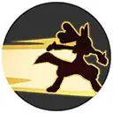
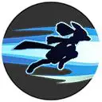
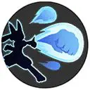

| Attaque | Icône | Description |
|---|---|---|
| Attaque de base |  |
La troisième attaque devient boostée et inflige des dégâts plus importants. |
| Talent | Icône | Description |
|---|---|---|
| Impassible | Quand les PV du Pokémon sont bas, il est protégé par un bouclier et sa vitesse de déplacement est augmentée. |
| Attaque spéciale 1 | ||
|---|---|---|
| Attaque | Icône | Description |
| Vive Attaque |  | Le Pokémon bondit en avant à une vitesse qui le rend presque invisible et inflige des dégâts aux adversaires lorsqu’ils sont touchés. |
| Attaque | Icône | Description |
|---|---|---|
| Niveau 5: Vitesse-Extrême Amélioration au niveau 11 |
 | Se précipite sur l’adversaire et l’attaque. Si cette capacité est utilisée au corps à corps, son délai de récupération est réinitialisé et il récupère des PV. Le délai de récupération ne peut pas être réinitialisé plusieurs fois consécutives sur le même ennemi. |
| Attaque | Icône | Description |
|---|---|---|
| Niveau 5: Poing Boost Amélioration au niveau 11 |
Charge son énergie avant de déclencher une attaque puissante, infligeant des dégâts et repoussant les adversaires. La prochaine Attaque de base sera boostée. |
| Attaque spéciale 2 | ||
|---|---|---|
| Attaque | Icône | Description |
| Poing Meteore | Envoie un coup de poing infligeant des dégâts et repoussant les adversaires. | |
| Attaque | Icône | Description |
|---|---|---|
| Niveau 7: Close Combat Amélioration au niveau 13 |
 | Enchaîne des combos d’attaques, infligeant des dégâts aux adversaires en les repoussant dans les airs. |
| Attaque | Icône | Description |
|---|---|---|
| Niveau 7: Charge Os Amélioration au niveau 13 |
Effectue des attaques à l’aide d’un os, infligeant plusieurs coups et étourdissant les adversaires pendant une courte période. L’attaque finale envoie l’os en l’air. Si le joueur veut l’utiliser à nouveau, il sera directement dirigé vers l’emplacement de l’os. |
| Capacité Unite | ||
|---|---|---|
| Attaque | Icône | Description |
| Sphère Suprême Débloquage au niveau 9 |
Projette une énorme boule d’énergie qui inflige des dégâts en zone à très longue portée.
Les dégâts du prochain Poing Boost (Power-Up Punch) sont augmentés. |
|